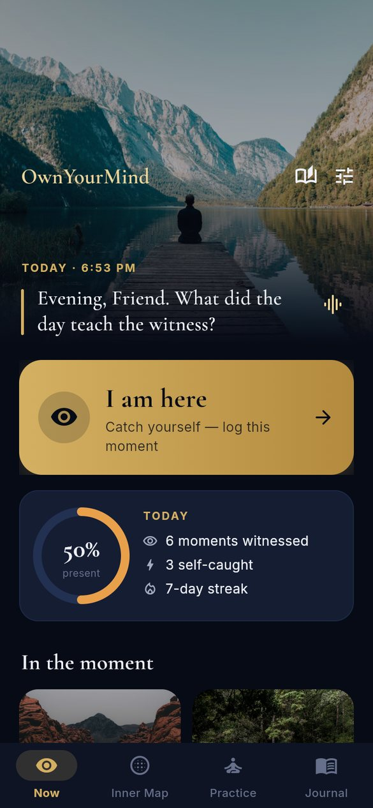
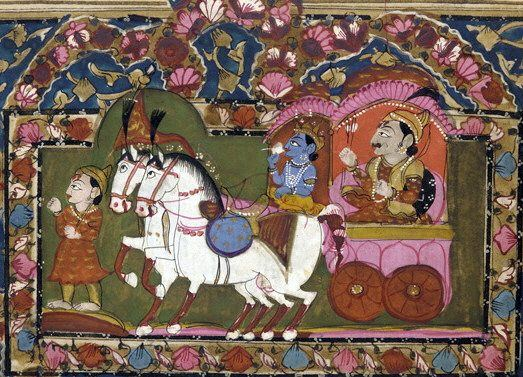
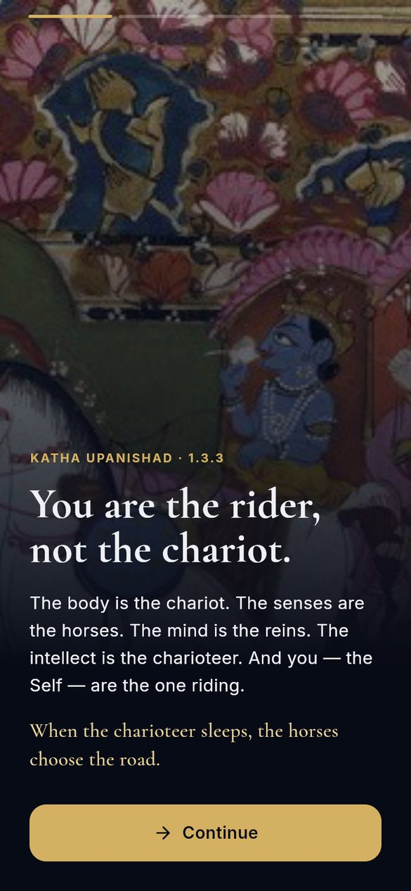
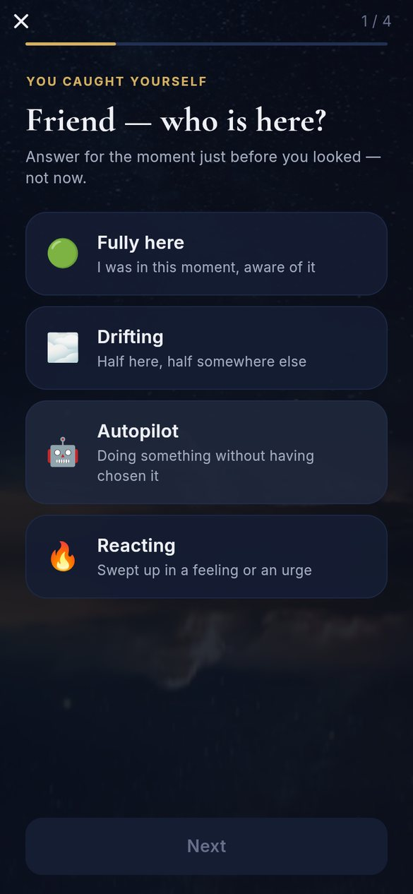
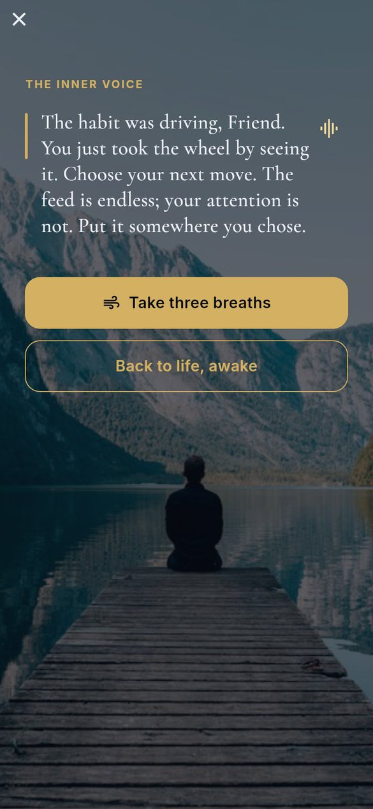
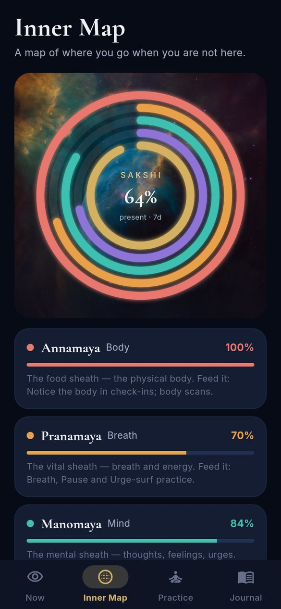
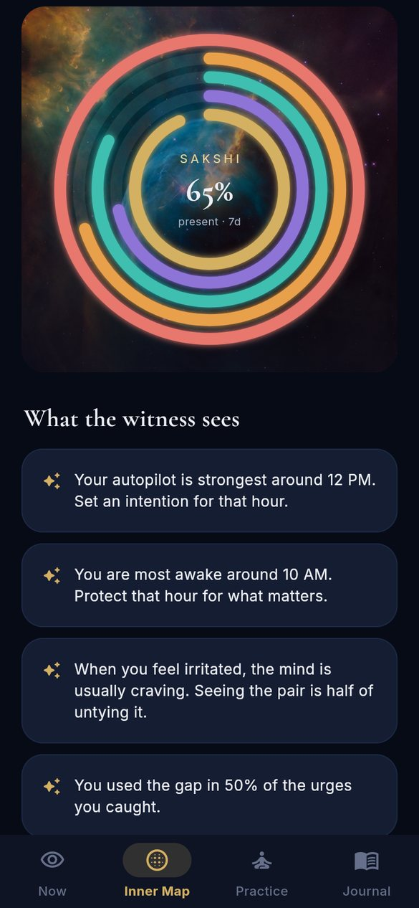

Sakshi · the witness, in your pocket
Half of your waking life runs without you choosing it. OwnYourMind is an inner voice that knocks at random moments, calls you by name, and asks: who is driving right now? Ten seconds to answer. Over the days, it draws a map of where you go when you aren't here.
Free · no account · nothing leaves your phone · Android 7+


Katha Upanishad 1.3.3–4
आत्मानं रथिनं विद्धि शरीरं रथमेव तु ।
बुद्धिं तु सारथिं विद्धि मनः प्रग्रहमेव च ॥
"Know the Self as the lord of the chariot, the body as the chariot, the intellect as the charioteer and the mind as the reins. The senses are the horses."
When the charioteer sleeps, the horses choose the road. That is the autopilot.
You can't see the autopilot from inside it. Something outside the loop has to knock at a moment you didn't choose. Your phone is always with you, so it can do that.
How it works
Four moves, repeated through the day until the voice is no longer the app's but yours.

At random moments in your waking hours, never on the hour: "Pallav, who is driving?" A silent anchor notification keeps the witness in your status bar all day.

Fully here, drifting, autopilot or reacting? What was the mind doing? Name the feeling. Feel the body. Naming a feeling quiets the brain's alarm centre.

The inner voice speaks for the witness. It addresses you in the second person, which research shows calms and clarifies. It never scolds: "You caught the autopilot. The one who noticed was not on autopilot."

The five sheaths light up as you practise. It shows the hours your autopilot is strongest, where the mind goes, which feelings pull which thoughts, and the loops you've caught.

Taittiriya Upanishad · Pancha Kosha
The Upanishads describe five sheaths around the Self, from the outermost to the innermost. In OwnYourMind they become five layers of awareness, and each one lights up as you feed it.
Practice
Seven practices, each with the real place it is named after. Every one is guided by voice and finishes in minutes.
STOP in sixty seconds: stop, take a breath, observe, proceed. It widens the space between stimulus and response.
Tap "thinking", "hearing", "wanting" as each arises. Mahasi-style training of the witness itself.
Rate the urge every 30 seconds and watch your own wave rise, peak and fall.
Recognize, Allow, Investigate, Nurture: a way to meet a strong feeling without being swept away.
A six-minute guided journey from body to bliss, ending at the witness of all five.
Ramana Maharshi's self-inquiry. When a thought arises, ask: to whom?
Also inside: Catch the autopilot (cue → urge → choice → what it actually gave you), a morning Sankalpa with an if–then plan, a Seneca-style evening review, a private journal, and a wisdom library from the Gita, Kabir, Ramana, the Stoics and Frankl.
The science
| Mechanism | What research found | In the app |
|---|---|---|
| Experience sampling | Random pings show what the mind is doing in real life. In 46.9% of samples people were mind-wandering, and less happy for it (Killingsworth & Gilbert, 2010). Questionnaires overstate inner speech 2–4× compared with random samples (Hurlburt). | Random witness pings in waking hours, never on the hour |
| Affect labeling | Putting feelings into words reduced amygdala activity and engaged the right ventrolateral prefrontal cortex (Lieberman et al., 2007). | "Name the feeling" in every check-in; RAIN |
| Self-distancing | Talking to yourself by name or in the second person lowered distress and improved performance under stress across six studies (Kross et al., 2014). | The inner voice calls you by name, as "you" |
| Implementation intentions | "If X, then I will Y" plans: d ≈ 0.65 across 94 tests (Gollwitzer & Sheeran, 2006). Smaller after bias correction in the 2024 update, but still positive. | Morning Sankalpa with an if–then plan |
| Reward re-valuation | Habits change when curiosity updates their reward value, not through willpower (Brewer). | Catch the autopilot: "what did it actually give you?" |
| Urge surfing | Urges rise and pass like waves when they aren't fed (Marlatt, relapse prevention). | Urge surfing with your own wave drawn live |
| Just-in-time support | Support at the right moment, adapted to state (Nahum-Shani et al., 2017). Evidence for mindfulness JITAIs is still early. | The voice adapts its reflection to your state and mind |
Honest limits. No app makes anyone aware. A notification can only knock, and opening the door is yours. App-based mindfulness shows modest average effects, and many people drop off within weeks. So OwnYourMind favours many tiny moments over long sessions, and its real goal is to fade: after weeks of being knocked on, people start knocking on themselves. Your self-caught share on the map tracks exactly that.
Philosophy
Step back from what you're experiencing and notice the one who is aware of it. Every serious tradition of the mind arrives here.
| Tradition | Its name for the witness | Its practice |
|---|---|---|
| Upanishads · Advaita | Sakshi, the witness; the rider of the chariot | Neti neti; Ramana's "Who am I?" |
| Bhagavad Gita 6.5, 6.35 | "Lift the self by the Self" | Abhyasa (practice) and vairagya (letting go) |
| Buddhism | Sati, mindfulness; sampajañña, clear knowing | Satipaṭṭhāna; Mahasi noting |
| Stoicism | Prosochē, attention to oneself | Seneca's evening review; Marcus' notes to himself |
| Gurdjieff | Self-remembering | "I am here, doing this" |
| Logotherapy | The space between stimulus and response | Choosing one's attitude |
| Kabir | "मोको कहाँ ढूँढे रे बन्दे, मैं तो तेरे पास में" | Stop searching outside; the seeker is the sought |
Begin
The Android app does everything: random pings, the always-on anchor, voice guidance and the full map. The web app works on any phone or laptop, but browsers can't send pings.
Version 2.0 · 23 MB · for 64-bit phones (almost every phone since 2017). Older 32-bit phone? Get the armv7 build.
Tap the button on your Android phone. If Chrome warns about the file, choose "Download anyway". It is the same app as the source.
Open the file. Android asks you to allow installs from Chrome once. Allow it, then tap Install.
Allow notifications. In Settings › Apps › OwnYourMind › Battery, choose "Unrestricted" so pings arrive on time.
Yes. There is no account, no server and no analytics. Every check-in, journal entry and map lives on your phone (or in your browser, for the web app). You can copy all of it as JSON from Settings, or erase it in one tap.
Start with 6–10 a day. The times are random within your waking hours and never on the hour, so the knock keeps surprising the autopilot. When you notice yourself catching the autopilot before the ping comes, lower the number.
No. It's a mirror and a practice companion, not a treatment. If you are struggling, please talk to someone you trust or a professional. In India you can call Tele-MANAS on 14416.